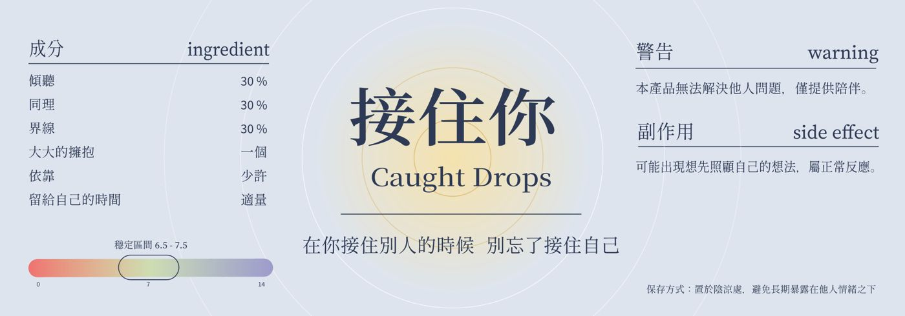

期中題目是設計一張標籤。我想到化學裡的緩衝溶液：不管加進酸還是鹼，酸鹼值都能維持在穩定的範圍裡。人在聽別人訴苦的時候，情緒也很容易被帶走。如果有一瓶藥水，能讓人像緩衝溶液一樣，接住別人的情緒、自己卻不被淹沒，那會是什麼樣子？這個計畫我叫它「魔水計畫」。

發想Idea
緩衝溶液不論加酸或加鹼，
pH 值都能維持在一定範圍
pH 值都能維持在一定範圍
＋
情緒感染傾聽別人的煩惱時，
自己的情緒也跟著受影響
自己的情緒也跟著受影響
→
魔水讓心情不容易被
他人負面情緒影響的神奇藥水
他人負面情緒影響的神奇藥水
對象Who
- 給誰
- 忙著照顧別人、忘記照顧自己的人
情緒找不到出口的人 - 我是誰
- 負責開立這份處方的藥師
因為把自己設定成「開處方的藥師」，整張標籤都用藥品說明書的語氣來寫：要有成分、用量、警告和保存方式，讀起來像正經的藥，內容卻是寫給一個人的提醒。
標籤Label
- 成分 ingredient
- 傾聽 30%・同理 30%・界線 30%
大大的擁抱 一個・依靠 少許
留給自己的時間 適量 - 警告 warning
- 本產品無法解決他人問題，僅提供陪伴。
- 副作用 side effect
- 可能出現想先照顧自己的想法，屬正常反應。
「界線」和「傾聽」「同理」一樣多，是這瓶藥最重要的地方：接住別人，不代表要把對方的情緒全部吞下去。左下角的酸鹼色階標出 6.5–7.5 的穩定區間，就是情緒能保持平衡的範圍；保存方式寫著「置於陰涼處，避免長期暴露在他人情緒之下」。標語是：在你接住別人的時候，別忘了接住自己。
瓶子Bottle

瓶子選了實驗室和藥局常見的褐色玻璃瓶，呼應最初的靈感來源：緩衝溶液。
褐色玻璃原本的功能是阻擋光線，保護瓶中的藥品不因外在環境而變質。這也是我想給使用者的東西：一層溫柔的保護，讓別人的情緒可以被聽見，卻不會滲進來改變你。
配色Color
寂靜藍安靜、放鬆
香檳金和煦、希望
暗藍色穩定、沉著
白色簡單、波動
赤褐色保護、專業
以寂靜藍作為標籤底色，給人一個可以放下戒備、慢慢說話的空間；中心的香檳金代表溫暖和希望。文字用暗藍色，沉穩地呼應藥水「讓情緒維持穩定」的功效。白色的漣漪象徵他人情緒落下時激起的波動，一圈圈擴散，最後還是會歸於平靜。
pH 色階刻意用比較鮮豔的顏色，代表外來的強烈情緒，和標籤本身的柔和形成對比。瓶身的赤褐色是整件作品唯一的暖深色，像一層保護的外殼，把標籤上輕柔的冷色調穩穩托住。
反思Reflection
每個元素都要有理由
一開始我想做唯美的風格，加了泡泡和星星。但被問到「為什麼是星星」時，我答不出來。我才意識到它們只是好看，和主題沒有關係。
之後我重新檢視每個元素：漣漪代表他人的情緒落下後會擴散，但終會平靜；中央的光暈是一盞留給你的夜燈；pH 色階則把「情緒穩定」變成看得見的刻度。這讓我學到，設計中的每個元素都需要有存在的理由。
藍色太冷，要怎麼讓人覺得被陪伴
我原本以為藍色太冷，不適合表達溫暖，因此嘗試過粉紫、燕麥色等不同方向。
最後選擇寂靜藍搭配香檳金，像深夜裡亮著的一盞燈。安靜的底色加上一點點暖光，反而比滿版的暖色更接近「被陪伴」的感覺。